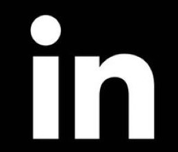

My name is Melwin Jolly. I am currently studying Bachelor of Software Engineering and I am in my third year of my degree. Currently I am so working at Monash Health Hospital as Admintrative Officers
I'm amped up for enhancing thought and strategies for developing programs and machine that can help individuals and take out human error.
After moving from school to school and from jobs to jobs, I have set my life for career that I like, the both area that I wanted to learn was about technologies and health sector, which lead me into software engineering degree. While my passion for technology and the health sector grew over year of working at Monash Health and studying at Swinburne University of Technology, which showed me the way of integrating technology into health sector to improve patient care and to eliminate human error. I am currently in my 3rd year degree and I have started to think about developing and researching ways that I help doctors, nurse, manager and others to improve patient care. Software Engineering and Health sector is where my passion and ambition lie.
Currently I am studying my Bachelor of Software Engineering (full-time) at Swinburne University of Technology and Bachelor of Theology (part-time) at the University of Divinity.
I have completed my year 12 in the 2018 December at Maranatha Christian School in Melbourne.
I have work various jobs from being a paper boy in my childhood time to an Admintrative Officer. In 2010 I got my first job as a paper boy, then I went to work as
Assistant Instructor at Chikara Karate Studio. I started their as trainee first then I have the chance to take some of the junior class.
After that job I would in
Celebrations Catering Services; As this was start up I had to do various tasks that included: cooking, serving, driver and many more. From their I started working as Food Service
Assistant (FSA) at Monash Health. This job gave good idea of a hospital environment. I had the opporunity work in various hostipal around South Eastern Suburbs of Victoria.
Currently I am working as Admintrative Officer at Monash Health. This job gave me various experience like: Admintration work in a Aged Care, Admin Team Leader, Covid-19 Screening and Covid-19 Admin,
concierge and CVMS support.
During my first year, I was learning about core understanding of Engineering. My unit were basically Physics, Mathematics, Engineering Materials, Mechanics of Structures and Designing unit.
My designing unit was a porject based unit that works with Engineer Without Borders (EWB) the image on the side is a design my group built for filter water using heats and sunlight
My second year I learned various coding langauges. These language includes: C++ (Software Development and Embedded Microcontrollers, C#, VHDL, Ruby, HTML, CSS and JavaScript. The images beside is are some of the tasks that I have worked on.
This first one is pragram that draws shapes; This is don using C#. The second one is is music player that is done using Ruby(GUI). The last one is a website that is built using SQL, JavaScript, CSS and HTML. For more press the arrow below.
This is project that I worked on that was making a music box using C++, a speaker, component similar to an Arduino
This is project that I worked on that was making a music box using C++, a led lights, component similar to an Arduino
Currently I am in semester of my 3rd year. In semester one I have leanred about user centre design, more on VHDL coding, another Maths unit that focus on using MATLAB and R and learned about Data Structures and Patterns
I have also learned about User-Centred Design. Beside in the App that my group design this year to track people
To Recruiter who are looking to hire me, just send a Hi!
And people who wants to collaborate with me just email me or message me on Linkedin
All of the following links will lead to some method of contacting me!
